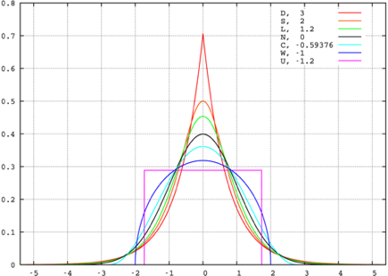

Probability¶
I was promised a book on data analysis and the first chapter is about probability, why?
The concept of probability, and how to work with it, is a pre-requisite to perform data analysis. Probabilities are the mathematical tool that allows us to make quantitative statements about data.
Randomness¶
Probability and randomness come as very closed ideas. Let’s begin by trying to understand what we mean by randomness.
The classical example for randomness comes from tossing a coin where the outcome is head or tail. Because it is a classical system, its outcome can in principle be predicted by evaluating the equations of motion. So how can the aspect of randomness arise from a, at least in principle, deterministic system? The issue is that in order to predict precisely the evolution of a physical system it would be necessary to “prepare” it in a configuration with infinitely precise initial conditions, which is in practice not possible. On this case, probability comes in as a convenient tool to predict the outcome of the experiment (head/tail).
A different situation is encountered in quantum mechanics when we study the physics at the atomic and sub-atomic scale. Here the governing laws are “intrinsically” probabilistic.
Probability¶
There are several definitions of probability. We will start from the axiomatic definition and then introduce the frequency interpretation. After having defined the conditional probability we will consider the subjective interpretation arising from the Bayes theorem. Later in the course we will address the effect on statistical inference coming from the frequentists/Bayesian interpretation of probability.
Axiomatic definition¶
We beging from the axiomatic definition of probability (also known as the Kolmogorov axioms). Let \(S\) be the set of possible outcomes of an experiment. For every possible outcome \(E\) the probability \(p(E)\) fulfills the following axioms:
\(P(S) = 1\)
\(P(E) \ge 0\), E \(\in\) S
\(P(\cup E_i) = \sum P(E_i)\) for any set of disjoint \(E_i\) and \(E_j\) (i.e. when \(E_i\) and \(E_j\) are mutually exclusive)
It follows immediately that:
\(P(E) = 1-P(E^*)\) where \(S = E \cup E^*\) and \(E\) and \(E^*\) are disjoint
\(P(E) \le 1\)
\(P(\emptyset) = 0\) where \(\emptyset\) is the null set
From these axioms we implement working interpretations of probability: the frequency limit and the Bayesian.
Probability as frequency limit¶
The most popular definition of probability is based on the limit of
relative frequencies. Assume we conduct an experiment which has a
certain number of outcomes (events). Suppose we prepare N identical
experiments and find that the outcome \(E_i\) occurs \(N_i\) times. We
assign the probability P\((E_i)\) to the outcome \(E_i\), defined by its
relative frequency of occurrence:
\(P(E_i)=\lim_{N\rightarrow \infty} \frac{N_i}{N}.\)
It’s easy to verify that this definition satisfies the axioms given above. This definition is also called the objective posterior probability, because the probability is defined a posteriori, i.e. after the outcomes of the experiment are known. The “frequency limit” approach is very useful in practice, however:
the limit does not exist in a strict mathematical sense. This is because there is no deterministic rule linking the outcome of experiment \(j\) with the outcome of experiment \(j+1\).
how do we prepare \(N\) identical experiments? Is it sufficient if they are very similar? (e.g. back to the coin toss: at each toss the coin has some abrasion and the \((j+1)^{th}\) toss is not identical to the \(j^{th}\)).
nobody can conduct infinitely many experiments. When does the series converge to the limit?
Conditional probability¶
Let A and B be two different events. The probability for A to happen is \(P(A)\) and correspondingly \(P(B)\) is the probability for B to happen. The probability that either A or B happens is given by:
where \(P(A\, \cap \, B)\) denotes the probability that A and B occur together. If A and B are mutually exclusive, then \(P(A\, \cap \, B)=0\).
Let \(P(A|B)\) be the conditional probability that event A occurs, given that event B has already occured. Then \(P(A\, \cap \, B)= P(A|B) \cdot P(B)\): the probability that A and B happen it’s the probability that A happens given B, multiplied by the probability that B happens. If the two events are independent, then \(P(A|B)=P(A)\), i.e. the occurrence of A does not depend on B, and so \(P(A\, \cap\, B)=P(A)\cdot P(B)\). The conditional probability \(P(A|B)\) can be written as:
\(P(A|B)=\frac{P(A\, \cap\, B)}{P(B)}.\)
Example:
Suppose you draw a card from a deck of 52 cards and it’s red. What is the probability that it is a diamond ?
\(\mbox{P(diamond|red)=}\frac{\mbox{P(diamond}\, \cap\, \mbox{red)}}{\mbox{P(red)}}\)
\(\mbox{P(diamond}\, \cap\, \mbox{red)}\) = number of red diamonds divided by the total number of cards = 13/52
\(\mbox{P(red)}\) = number of red cards divided by the total number of cards = 26/52
\(\mbox{P(diamond|red)} = \frac{13/52}{26/52} = 13/26 = 0.5\)
which makes sense: 50% of the red cards are diamonds
Example:
Suppose you draw a card from a deck of 52 cards and it’s red.
What is the probability that it is a queen ?
\(\mbox{P(queen|red)}=\frac{\mbox{P(queen}\, \cap\, \mbox{red)}}{\mbox{P(red)}} \)
\(\mbox{P(queen}\, \cap\, \mbox{red)}\) = number of red queens divided by the total number of cards = 2 / 52
\(\mbox{P(red)}\) = number of red cards divided by the total number of cards = 26/52
\(\mbox{P(queen|red)}= \frac{2/52}{26/52} = 1/13\)
which makes sense: only 2 cards are queen out of the 26 red cards.
Example:
Suppose you draw a card from a deck of 52 cards and it’s red.
What is the probability that it is a queen of diamonds ?
\(\mbox{P(queen of diamonds|red)=}\frac{\mbox{P(queen of diamonds}\, \cap\, \mbox{red)}}{\mbox{P(red)}} \)
\(\mbox{P(queen of diamonds}\, \cap\, \mbox{red)}\) = number of queens of diamonds divided by the total number of cards = 1 / 52
\(\mbox{P(red)}\) = number of red cards divided by the total number of cards = 26/52
\(\mbox{P(queen|red)}= \frac{1/52}{26/52} = 1/26\)
which makes sense: only 1 cards are queen of diamonds out of the 26 red cards.
Bayes’ Theorem¶
The Bayes’ theorem formalize the relation between the conditional probability P(A|B) and P(B|A):
It can be proven in one line by writing \(P(A \cap B)\) in two different ways:
\(P(A\, \cap\, B)= P(A|B) \cdot P(B) = P(B|A) \cdot P(A) = P(B\, \cap\, A)\)
and hence
\(P(A|B)=\frac{P(B|A)\cdot P(A)}{P(B)}.\)
In the general case of \(n\)-classes of events with the properties \(A_{i}\), the theorem generalizes to:
The theorem states that the probability that A happens given B is equal to the probability that B happens given A (note that A and B are inverted) times your prior knowledge about A and divided by a normalization factor P(B). The normalization P(B), the probability for B to happen given that A or not-A happens, in all practical cases is expresses as: \(P(B) = P(B|A)P(A)+P(B|\mbox{not-A})P(\mbox{not-A})\).
Example:
Consider a topic coming from virology. We assume that 0.1% of all swans of a certain colony are infected by an influenza virus. A specially developed test for influenza shall, in case of an infected bird, have a detection efficiency of 98%. Unfortunately, the probability of error (false positive) is 3%, which means that the test indicates an infection in 3% of all cases where the bird is not infected.
We ask now for the probability \(P\) that, after having had a positive test, a swan is actually infected by the influenza virus.
According to the given information, we have:
\(P({\rm influenza})=0.001\) (0.1% of all swans are infected)
\(P({\rm non-influenza})=1-0.001=0.999\).
The probabilities for the test response are:
\(P(+|{\rm influenza})=0.98\) and
\(P(-|{\rm influenza})=1-0.98=0.02\).
Where \(P(+|{\rm influenza})\) (\(P(-|{\rm influenza})\)) denote the positive (negative) response under the condition that the swan is actually infected.
Furthermore, the probability of a wrong result of the test is given by
\(P(+|{\rm non-influenza})=0.03\) and
\(P(-|{\rm non-influenza})=1-0.03=0.97\).
Therefore, the probability \(P({\rm influenza}|+)\) that a swan is infected, given the test was positive, is
\(\begin{aligned} P({\rm influenza}|+) &=&\frac{P(+|{\rm influenza})\cdot P({\rm influenza})}{P(+|{\rm influenza})\cdot P({\rm influenza})+P(+|{\rm non-influenza})\cdot P({\rm non-influenza})}\\ &=&\frac{0.98\times 0.001}{0.98\times 0.001+0.03\times 0.999}\\ &=&3\%. \end{aligned}\)
This means that an infection is present in only 3% of all cases in which the test was positive!
Subjective probability or the Bayesian interpretation¶
In Bayesian inference the probability is interpreted as a subjective “degree of belief” which can be modified by observations (more data). This is the strength of the Bayesian theorem: it provides a quantitative way to update the initial knowledge (prior belief) about a proposition when new data becomes available. Try to compute as an exercise how the \(P({\rm influenza}|+)\) of the previous example changes if you get two consecutive positive tests.
A typical application of Bayes theorem in physics is to take the Bayes’ theorem and rewrite it interpreting P(A) as the probability (“belief”) that a theory is correct before doing the experiment; P(B\(|\)A) = P(result \(|\) theory) is the probability of getting the result if the theory is true; P(B) = P (result) is the probability of getting the result irrespective of whether the theory is true or not, and P(A\(|\)B) = P (theory \(|\) result) is our belief in the theory after having obtained the result.
It’s important to notice the inversion of the logic: for
\(P(\mbox{theory}|\mbox{result})\) you have collected the data and you are
evaluating the probability of the theory to be right; for
\(P(\mbox{result}|\mbox{theory})\) (called the likelihood, we will
come back to the reason of this name later in these notes when talking
about fits) you are estimating the probability to obtain such a data
distribution given a certain theory.
The fundamental difference between the frequentist approach and the
Bayesian approach relies in the interpretation. The frequentist’s
probability is interpreted as a State of Nature, whereas the Bayesian
probability is a State of Knowledge inducing inevitably some
subjectivity. Thus the probability of an event \(P(E)\) depends on the
information which is accessible to the observer. The function \(P(E)\) is
therefore not purely an intrinsic function of the event, it rather
depends on the knowledge and information possessed by the observer. A
question like “what is the probability that SuperSymmetry is a true
symmetry of nature?” has no meaning in frequentist inference: it is or
it is not. There is no probability associated to it. We can instead
associate a probability in Bayesian interference, interpreting the
probability as degree of belief.
There is no a priori way to assign the “prior” assumption \(P(A)\) (in the
previous example \(P(\mbox{theory})\)): the assignment of the prior probability is
subjective. The usual prescription is to assume complete ignorance about
the prior P(A) and take all values of A as equiprobable.
There are objections to this postulate:
if we are completely ignorant about P(A), how do we know it is a constant?
a different choice of P(A) would give a different P(A\(|\)B)
if we are ignorant about P(A), we are also ignorant about P(\(A^2\)) or P(1/A), etc… taking any of these (P(\(A^2\)) or P(1/A), etc…) as constant would imply a different P(A), giving a different posterior probability.
These objections are usually answered by the assertion (supported by experience) that P(A\(|\)B) usually converges to about the same value after several experiments irrespective of the initial choice of prior P(A).
The distinction between the frequentist and Bayesian approaches to
statistical inference reaches its climax when addressing the problem of
setting confidence intervals in Sec. Confidence Intervals. The following is an example to give an idea of the problem.
Example: FIXME
Let’s take the measurement of the mass of the electron as an example to understand the difference between the frequentist and Bayesian interpretation of confidence intervals. You measure the mass of the electron to be \(520 \pm 10~keV/c^2\), i.e. you measured \(520~keV/c^2\) with an apparatus with a resolution of \(10~keV/c^2\). It is tempting to conclude that “the mass of the electron is between 510 and 530 \(keV/c^2\) with 68% probability”. This is not the frequentist’s meaning of probability. In the frequentist interpretation, the statement that the electron has a certain mass with a certain probability is nonsense. The electron has a definite mass, the problem is that we do not know what the value is. It sounds much more like a Bayesian statement: with a resolution, or “error”, of \(\sigma = 10~keV/c^2\), the probability that we will measure a mass m when the true value is \(m_e\) is
\(P(m | m_e) \propto e^{-(m - m_e)^2/2\sigma^2}\)
this is the likelihood term. Then by Bayes’ theorem, the probability that the true mass has the value \(m_e\) after we have measured a value m is
\(P(m_e | m) = \frac{P(m | m_e)P_{prior}(m_e)}{P(m)}\)
\(\propto P (m | m_e) \;\; \mbox{assuming} \;\;\;P_{prior}(m_e) = const\)
\(\propto e^{-(m-m_e)^2/2\sigma^2}\)
What we typically state is that “the mass of the electron is between 510 and \(530~keV/c^2\) at 68% confidence level”. Note the use of “confidence level” instead of “ probability”.
This and other subtleties will be discussed further when discussing confidence intervals.
Probability density function¶
We define random variable any function of the data. The event space is the set of all possible values of a random variable. A random variable which can take any value between two arbitrarily given points in the event space is called a continuous variable; conversely, if the variable can only take certain values it is called a discrete variable. In the same manner, data described by discrete or continuous variables are called discrete data or continuous data respectively. The distribution \(f(x)\) of a random variable \(x\) is called probability density function (p.d.f.). \(f(x')dx'\) is the probability to find \(x\) in the interval between \(x'\) and \(x'+dx'\) and it is normalized \(\int_{-\infty}^{+\infty}f(x')dx'=1\) (the probability to find \(x\) anywhere in its event space is 1). Note that \(f(x)\) is not a probability but \(f(x)dx\) is.
Cumulative distribution function¶
Let \(x\) be a one-dimensional continuous random variable distributed according to \(f(x)\). The cumulative distribution function (cdf) \(F(x')\) gives the probability that the random variable \(x\) will be found to have a value less than or equal to \(x'\):
\(F(x') = \int_{-\infty}^{x'} f(x)dx\)
It follows trivially (with some abuse of notation) that \(F(-\infty)=0\) and \(F(+\infty)=1\). The function \(F\) is a monotonously (but not necessarily strictly monotonously) rising function of \(x\).
The probability density function \(f(x)\) is then simply \(f(x)=dF(x)/dx\).
The function \(F\) is dimensionless whereas the function \(f\) has dimension \(1/x\). The probability to observe the random variable \(x\) between two values \(x_1\) and \(x_2\) can be written in terms of the cdf as:
\(P(x_1 \le x \le x_2)=\int_{x_1}^{x_2} f(x')dx'=F(x_2)-F(x_1)\)
The following is an example to show what is the cumulative of a pdf (chosen to be a gaussian - see next chapter for more details on the gaussian pdf).
# import relevant libraries
from scipy.stats import norm
import numpy as np
import matplotlib.pyplot as plt
%matplotlib inline
fig, ax = plt.subplots()
x= np.arange(-5,5,0.01) # range of the x axis
ax.set_xlabel('x')
ax.set_ylabel('pdf(x)')
ax.plot(x, norm.pdf(x),"black") # plot the gaussian pdf (norm.pdf) as a function of x
ax.set_ylim(0,0.5)
plt.show()

fig, ax = plt.subplots()
ax.plot(x, norm.pdf(x), 'black')
ax.set_xlabel('x')
ax.set_ylabel('pdf(x)')
x=np.arange(-5,1,0.01) # cumulative plotted from -5 to 1
ax.set_ylim(0,0.5)
ax.fill_between(x,norm.pdf(x),alpha=0.5, color='black')
plt.show()
fig, ax = plt.subplots()
ax.set_xlabel('x')
ax.set_ylabel('cdf(x)')
x= np.arange(-5,5,0.01) # range of the x axis
ax.plot(x, norm.cdf(x), 'black')
ax.set_ylim(0,1.1)
plt.show()
Mean, Median and Mode¶
The arithmetic mean \(\bar{x}\) (or simply mean value) of a set of \(N\) numbers \(X_{i}\):
\(\bar{x}=\frac{1}{N}\sum_{i=1}^N X_i\)
The mean of a function of \(x\), (\(\bar{f}\)) can be calculated analogously:
\(\bar{f}=\frac{1}{N}\sum_{i=1}^N f(X_i).\)
If the \(N\) data points are classified in \(m\) intervals (i.e. bins of a histogram), and if \(n_{i}\) stands for the number of entries in the interval (bin) \(i\), then:
\(\bar{x}=\frac{1}{N}\sum_{i=1}^{m}n_iX_i.\)
The median of a random variable \(x\) divides a frequency distribution into two equally sized halves:
\(\int_{-\infty}^{x_{median}}f(x')dx'=\int_{x_{median}}^{+\infty}f(x')dx'=0.5.\)
The mode corresponds to the value of \(x\) where the probability density \(f(x)\) has a maximum. The mode is not necessarily unique: if a distribution has two maxima, we call it bimodal, if it has several maxima, we call it multimodal. When only one maximum is present the mode is also called most probable value.
A rough relation between mode, median and mean (true for unimodal and “not very skewed” distributions) is given by
\(\mbox{ Mean - Mode}=3\times\mbox{ (Mean - Median)}.\)
So by knowing two out of the three, the third one can be estimated easily by this formula.
import numpy as np
mu,sigma = 0,5
X = np.random.normal(mu, sigma, 11)
print ("array = ", X)
print ("size of the array = ", np.size(X))
array = [10.02121056 7.98621946 4.03976427 -7.98567496 -4.12666818 4.48032298
2.305154 -8.22200181 3.39185546 7.82969407 -3.22509666]
size of the array = 11
#compute the mean
sum = 0
for x in X:
sum += x
print ("mean = ", sum/np.size(X))
# or using the numpy mean function
print ("mean = ", np.mean(X))
mean = 1.4995253805232884
mean = 1.4995253805232884
#Compute the median
np.sort(X)
print ("sorted array = ", X)
np.median(X)
sorted array = [10.02121056 7.98621946 4.03976427 -7.98567496 -4.12666818 4.48032298
2.305154 -8.22200181 3.39185546 7.82969407 -3.22509666]
3.3918554582113787
#Compute the mode of this array:
X = [ 1,2,2,4,5,5,5,6,6,7,8,9]
from scipy.stats import mode
# this will give you back the mode and the number of times it appears
print ("mode", mode(X))
mode ModeResult(mode=array([5]), count=array([3]))
# plot the distribution to see visually the mode
import matplotlib.pyplot as plt
%matplotlib inline
n, bins, patches = plt.hist(X, facecolor='black')
plt.show()

The geometric mean \(\mu_g\) is defined as:
\(\mu_g = \sqrt[N]{x1\cdot x2\cdot \dots \cdot x_N}.\)
It is used to characterize the mean of a geometric sequence \((a, ar, ar^2, ar^3, ...)\). The geometric interpretation of the geometric mean of two numbers, a and b, is the length of one side of a square whose area is equal to the area of a rectangle with sides of lengths a and b.
Example:
A population of bacteria grows from 2000 to 9000 in 3 days.
What is the daily grow (assuming a constant rate r) ?
\(1^{st}\) day: \(n_1\) = 2000 + 2000 r
\(2^{nd}\) day: \(n_2\) = n1 + n1 r = 2000 \((1+r)^2\)
\(3^{rd}\) day: \(n_3\) = n2 + n2 r = 2000 \((1+r)^3\) = 9000
\(\Rightarrow 1+r = \sqrt[3]{4.5} \Rightarrow r = 65.1\%\)\
The function
\(f(x) = a \cdot (1+f)^x\)
is called geometrical or exponential growth when \(x\) is discrete or continuous respectively.
It covers a particularly important role in finance where it describes
the compound interest.
The harmonic mean \(H\) is defined as:
\(\frac{1}{H}=\frac{1}{N}\sum_{i} \frac{1}{X_{i}}.\)
It is characterize the mean value of a harmonic sequence
\(\frac{1}{a}\;, \;\frac{1}{a+d}\;, \;\frac{1}{a+2d}\;,...\;,\; \frac{1}{a+kd}\;,...\)
Example:
A car travels at 80 km/h for the half of the trip and 100 km/h for the second half. What’s his average speed? 2/(1/80+1/100) = 89 km/h (averaging over periods of time not distances)
Quantiles¶
Quantiles are values taken from the inverse of the cdf of a random variable. When they are taken at regular intervals they get special names. If the set of data is split into:
two equally sized parts, then the value in the middle is the median.
four equally sized parts, then the four values are called quartiles Q1, Q2, Q3 and Q4. The value of Q2 coincides to the median.
ten parts we call them deciles
hundred parts we call them percentile.
The quantiles allow to describe any data distribution without knowing what is its underlying pdf. For example, when a baby is born the pediatrician will compare her/his weight or height with respect to a reference population of babies of the same age, in terms of percentiles. When a baby is in the 20-th weight percentile, it means that 20% of the babies in the reference sample will be lighter.
The following is an example of deciles on a gaussian distribution.
from scipy.stats import norm
import numpy as np
import matplotlib.pyplot as plt
%matplotlib inline
plt.figure(figsize=[5,15])
# cumulative of the gaussian pdf
plt.subplot(211)
x = np.linspace(-5,5,100)
plt.plot(x, norm.cdf(x),'k-', alpha=0.6)
plt.xlabel(r'x [units]')
plt.ylabel(r'cdf(x)')
# draw vertical lines
for i in range(0,11):
step = i*0.1
plt.plot([-5,5], [step, step], 'k--', lw='0.2')
plt.plot([norm.ppf(step),norm.ppf(step)], [step, 0], 'k--', lw='0.2')
# gaussian pdf
plt.subplot(212)
plt.subplots_adjust(top=0.5)
x = np.linspace(-5,5,100)
plt.plot(x, norm.pdf(x),'k-', alpha=0.6)
plt.xlabel(r'x [units]')
plt.ylabel(r'pdf(x)')
# write out the corresponding numerical values
s =[]
p =[]
for i in range(0,11):
step = i*0.1
s.append("{:.1f}".format(step))
p.append("{:.3f}".format(norm.ppf(step)))
plt.plot([norm.ppf(step),norm.ppf(step)], [norm.pdf(norm.ppf(step)), 0], 'k--', lw='0.2')
print (s)
print (p)
['0.0', '0.1', '0.2', '0.3', '0.4', '0.5', '0.6', '0.7', '0.8', '0.9', '1.0']
['-inf', '-1.282', '-0.842', '-0.524', '-0.253', '0.000', '0.253', '0.524', '0.842', '1.282', 'inf']

Expectation value¶
The expectation value of a random variable \(x\) (or first moment) is defined as:
\(<x>=\int_{-\infty}^{\infty} x' f(x') dx'\)
and for discrete variables \(r\) as:
\(<r>=\sum r_i P(r_i).\)
where \(f(x)dx\) is the probability that
the value x is found to be in the interval \((x, x+dx)\) and in the
discrete case \(P(r_i)\) is the probability that the value \(r_i\) occurs.
The expectation value reduces to the arithmetic mean when the
probability for any value to occur (\(f(x)\) in the continuous case or
\(P(r)\) in the discrete case) is constant. Take e.g. the discrete case
and set the probability for any event \(r_i\) \((i = 1,...,N )\) to occurr
to be the same. Because \(P(r_i)\) is normalized \(\sum_{i=1}^N P(r_i) = 1\)
then for each \(i\), \(P(r_i) = 1/N\):
\(< r > = \sum r_i P(r_i) = \frac{1}{N}\sum r_i\)
More generally, the expectation value for any symmetric probability
distribution will coincide with the arithmetic mean. In case of
asymmetric distributions, the expectation value will be pulled towards
the side of the tail (more details on this when we will see some
examples of probability distibution functions).
The expectation value of a function \(h(x)\) is defined by
\(<h>=\int h(x')f(x')dx'\).
The expectation value is a linear operator, i.e.
\(<a\cdot g(x)+b\cdot h(x)> = a <g(x)>+\,b <h(x)>,\)
but in general \(<fg>\ne<f><g>\). The equality is true only if \(f\) and \(g\) are independent.
Example:
In quantum mechanics, to compute the expectation value of A, the eigenvalues (outcomes of a measurement) are weighted on their probability to occur: \(\langle A \rangle_\psi = \sum_j a_j |\langle\psi|\phi_j\rangle|^2\)
Variance and Standard Deviation¶
The expectation values of \(x^{n}\) and of \((x-<x>)^{n}\) are called the
\(n^{th}\) algebraic moment \(\mu_{n}\) and the \(n^{th}\) central moment
\(\mu'_{n}\), respectively. Central refers to the fact that the
expectation value of x is subtracted from each value of x (which in case
of a symmetric distribution effectively centers it at zero).
The first algebraic moment \(\mu_{1}\) is equal to the expectation value
\(<x>\) and it is usually just called \(\mu\). The first central moment is
zero by definition.
The second central moment is a measure of the width of a probability distribution and is called variance \(V(x)\). Its square root is called the standard deviation \(\sigma\):
\(\begin{aligned} V(x) &=& <(x-<x>)^2> = <x^2 + <x>^2 -2x<x> >= \\ &=& <x^2> + <x>^2 - 2<x><x> = <x^2>-<x>^2 =\sigma^2\end{aligned}\)
where we just used the linearity of the expectation value.
We will see when discussing the characteristic function that any a pdf is uniquely described by its moments (see Characteristic function)
It is important to notice that quantities like the variance or the standard deviation are defined using expectation values, and they can only be determined if the “true” underlying probability density of the sampling distribution is known. When analysing data we need to distinguish the distribution of the collected data, the (known) sampling distribution, from the (unknown) parent distribution that we are effectively sampling with our measurements. One of the goals of data analysis (called parameter estimation) is to estimate the parameters of the parent distribution from the properties of the collected data sample.
When the the mean \(<x>\) of the parent distribution is not known, we define the sample variance, commonly called \(s^{2}\), as:
\(\begin{aligned} \label{samplevariance} s^2&=& \frac{1}{N-1}\sum_i(x_i-\bar{x})^2 \\\end{aligned}\).
To compute this expression, one has to loop on the data a first time to compute the sample mean, and then a second time to compute the sample variance. A little algebra, transforms the previous expression into
\(\begin{aligned} s^2 &=& \frac{1}{N-1}\left(\sum_i x_i^2-\frac{1}{N}\left(\sum_i x_i\right)^2\right) \end{aligned}\)
that can be computed by looping only once on the events. This is particularly useful when the number of data points is huge.
The value of \(s^{2}\) can be understood as the best estimate of the “true” variance of the parent distribution. The origin of the factor \(\frac{1}{N-1}\) instead of the usual \(\frac{1}{N}\) will become clear when we will discuss the theory of estimators
Example:
The following table collects some of the quantities defined above, for the Maxwell distribution. The probability density for the magnitude of the velocity \(v\) of molecules in an ideal gas at temperature \(T\) is given by:
Here, \(m\) is the mass of the molecule and \(k_{B}\) is the Boltzmann constant.
Quantity |
Value |
|---|---|
Mode (most probable value) \(v_m\) |
\((2kT/m)^{1/2}\) |
Mean \(<v>\) |
\((8kT/\pi m)^{1/2}\) |
Median |
\(v_{median}= 1.098\cdot v_m\) |
RMS-velocity \(v_{rms}\) |
\((3kT/m)^{1/2}\) |
Full Width at Half Maximum¶
Another way to characterize the spread of the data is to compute the Full Width at Half Maximum (FWHM). Given a distribution P(x), it can be computed as the difference between the two values of x at which P(x) is equal to half of its maximum. For a gaussian distribution the relation between FWHM and the standard deviation is:
\(\mbox{FWHM} = 2\sqrt{2\ln2}\sigma \sim 2.355\sigma\)
import numpy as np
import matplotlib.pyplot as plt
# Gaussian mu = 0, sigma = 1
max = norm.pdf(0)
halfMax = max/2.
# Constant array at helfMax
f=np.empty(10000)
f.fill(halfMax)
fig, ax = plt.subplots()
x= np.arange(-5,5,0.001)
ax.set_xlabel('x')
ax.set_ylabel('pdf(x)')
ax.plot(x, norm.pdf(x),'k') # Gaussian
ax.plot(x, f,'k') # Constant
# Find the intersection between the gaussian and the constant
# by finding where the sign of the difference of the two functions changes
idx = np.argwhere(np.diff(np.sign(norm.pdf(x) - f))).flatten()
plt.plot(x[idx], f[idx], 'ro')
ax.set_ylim(0,0.5)
plt.show()
print ("Half Maximum = ", halfMax)
print ("Intersections: ", x[idx])
print ("FWHM = ", x[idx[1]]-x[idx[0]])

Half Maximum = 0.19947114020071635
Intersections: [-1.178 1.177]
FWHM = 2.3550000000007865
Higher Moments¶
The third moment is called skewness \(\gamma_1\) and it is often defined as
\(\gamma_1=\mu'_3/\sigma^3=\frac{1}{\sigma^3}<(x-<x>)^3>= \frac{1}{\sigma^3}(<x^3>-3<x><x^2>+2<x>^3).\)
The quantity \(\gamma_1\) is dimensionless and characterizes the skew. It is zero for symmetric distributions, and positive(negative) for asymmetric distributions with a tail to the right(left).
Another definition of skewness often used is the Pearson’s skew given by \((mean-mode)/\sigma\).
FIXME

The kurtosis \(\gamma_2\) is defined as \(\gamma_{2}=\mu'_4/\sigma^4-3\), which is a (dimensionless) measure of how the distribution behaves in the tails compared to its maximum. The factor \(-3\) is subtracted to obtain a kurtosis of zero for a Gaussian distribution. A positive \(\gamma_{2}\) means that the distribution has a larger maximum and larger tails than a Gaussian distribution with the same values for mean and variance
FIXME
{kind=link}
Here are some useful scipy functions to compute moments:
import numpy as np
mu,sigma = 0,5
X = np.random.normal(mu, sigma, 101)
#print (X)
from scipy.stats import moment
for i in range(1,5):
print (i,"-moment", moment(X, moment=i))
1 -moment 0.0
2 -moment 26.06396929926389
3 -moment 17.07878635180023
4 -moment 1982.3218870809642
from scipy.stats import skew
skew(X)
# left tail
Xleft = np.array([0,1,1,1,3,3,3,3,3,4])
print ("left", skew(Xleft))
# right tail
Xright = np.array([0,1,1,1,3,4,5,6])
print ("right", skew(Xright))
left -0.3818440590736698
right 0.337575590140799
from scipy.stats import kurtosis
kurtosis(X)
-0.08194774145399863
Useful Inequalities¶
Two useful inequalities can be used to estimate the upper limits
probabilities if the underlying distribution is not known. Both
inequalities are given without proof.
Let \(x\) be a positive random variable. Then it holds:
\(P(x\geq a) \leq \frac{<x>}{a}.\)
This inequality provides an upper limit for the probability of random events located in the tails of the distribution.
Let \(x\) be a positive random variable. Then it holds:
\(P(\,|~x~-<x>|\geq k)\leq \frac{\sigma^2}{k^2}\)
So for example the probability for a result to deviate for more than three standard deviations from the expectation value, is always smaller than 1/9, independent of the underlying probability distribution. The inequality is true in general, but it gives quite a weak limit (for a Gaussian distribution, the probability to lie outside three standard deviations is about 0.0027, see next chapter). It is nevertheless useful for qualitative considerations, if nothing at all is known about the underlying distribution.
More than one dimension¶
When doing measurements we are often performing a sampling of a multi-dimensional dimensional pdf. For example in the case of a 2D pdf, the probability to observe \(X_1\) in \([x_1, x_1+dx_1]\) and \(X_2\) in \([x_2, x_2+dx_2]\) is:
\(\begin{aligned} P(x_1< X_1 < x_1+dx_1, x_2 < X_2 < x_2+dx_2) &=& f(x_1,x_2)dx_1dx_2\\ P(a< X_1 < b, c < X_2 < d) &=& \int_a^b dx_1 \int_c^d dx_2 f(x_1,x_2)\\\end{aligned}\)
For multi-dimensional pdfs we can define the concept of marginal and conditional pdf. To get the idea let’s take a 2D example:
Marginal pdf: it’s the pdf describing \(x_1\) independently of the value of \(x_2\); the 2D probability can be “marginalised / projected” by integrating over one variable
\(\begin{aligned} f_1(x_1) &=& \int_{-\infty}^{+\infty}f(x_1,x_2)dx_2 \\ f_2(x_2) &=& \int_{-\infty}^{+\infty}f(x_1,x_2)dx_1 \\ \end{aligned}\)
Conditional pdf: it’s the pdf of \(x_2\) for a fixed value of \(x_1\): \(f(x_2|x_1)\)
\(\begin{equation} P(a<X_2<b|X_1 = x1) = \int_a^bf(x_2|x_1)dx_2 \end{equation}\)
In plain english: the marginal pdf ignores the values of the other variable(s), the conditional pdf fix the value of the other variable(s).
FIXME Normalization Coditional probability
import math
import numpy as np
import matplotlib.pyplot as plt
from mpl_toolkits.mplot3d import axes3d
# multivariate gaussian mu = 0; sigma = 1
def gg(x, y):
return 1./(2*math.pi) * np.exp(-0.5*(x*x +y*y))
# gaussian mu = 1; sigma
# def g(x, sigma):
# return 1./math.sqrt(2*math.pi)/sigma * np.exp(-0.5*(x*x))
x = np.linspace(-5, 5, 1000)
y = np.linspace(-5, 5, 1000)
X, Y = np.meshgrid(x, y)
G = gg(X, Y)
fig = plt.figure(figsize=(6, 6))
ax1 = plt.axes(projection='3d')
ax1.plot_surface(X, Y, G,cmap='Greys', linewidth=0)
ax1.set_xlabel('X')
ax1.set_ylabel('Y')
ax1.set_zlabel('Z')
# Conditional distribution
# p(X=x, y=1)
xline = x
yline = -1.+0.*y
zline = gg(xline,yline)
ax1.plot3D(xline, yline, zline, 'red', label='p(X=x,Y)',linewidth=3.0)
fig = plt.figure(figsize=(6, 6))
ax2 = fig.gca(projection='3d')
#ax1 = plt.axes(projection='3d')
ax2.plot_surface(X, Y, G, cmap='Greys')
cset = ax2.contourf(X, Y, G, zdir='x', offset=-5, cmap='Greys')
cset = ax2.contourf(X, Y, G, zdir='y', offset=5, cmap='Greys')
ax2.set_xlim(-5, 5)
ax2.set_ylim(-5, 5)
ax2.set_xlabel('X')
ax2.set_ylabel('Y')
ax2.set_zlabel('Z')
plt.show()
<ipython-input-14-6a35344075b7>:36: MatplotlibDeprecationWarning: Calling gca() with keyword arguments was deprecated in Matplotlib 3.4. Starting two minor releases later, gca() will take no keyword arguments. The gca() function should only be used to get the current axes, or if no axes exist, create new axes with default keyword arguments. To create a new axes with non-default arguments, use plt.axes() or plt.subplot().
ax2 = fig.gca(projection='3d')


Transformation of variables¶
Let’s consider a 2-dimensional event space as an example (easily generalizable to the N-dimensional case) and call the two random variables \((x,y)\). How does the pdf \(f(x,y)\) transforms under a change of variable to \((X,Y)\)? (see Fig.1.10{reference-type=”ref” reference=”fig:transformation”})
{#fig:transformation
width=”60%”}
Consider a small interval \(A\) around a point \((x,y)\) that we will transform to a small interval \(B\) around the point \((X,Y)\) such that \(P(A)=P(B)\):
\(P\left[(X,Y) \in B\right] = P\left[(x,y) \in A \right] = \int_A f(x,y) dx dy.\)
Assume the transformation
\(\begin{aligned} X &=& u_x(x,y)\\ Y &=& u_y(x,y)\end{aligned}\)
to be bijective so that the inverse exist (together with the first derivative):
\(\begin{aligned} x &=& w_x(X,Y)\\ y &=& w_y(X,Y).\end{aligned}\)
Then
\(\begin{aligned} P(A) &=& P(B)\\ \int_A f(x,y) dx dy &=& \int_B f(w_x(X,Y), w_y(X,Y)) |J| dX dY\end{aligned}\)
where J is the Jacobian determinant:
\(J = \left| \begin{array}{cc} \frac{\partial w_x}{\partial x} \frac{\partial w_x}{\partial y}\\ \frac{\partial w_y}{\partial x} \frac{\partial w_y}{\partial y} \end{array}\right|\)
So the p.d.f. in (X,Y) is the p.d.f. in (x,y) times the Jacobian:
\(g(X,Y) = f(x,y) |J| = f(w_x(X,Y), w_y(X,Y)) |J|\)
Covariance and Correlation¶
Let \(f(x_1,x_2) dx_1 dx_2\) be the joint probability to observe \(x_1\in [x_1,x_1+dx_1]\) and \(x_2\in [x_2, x_2+dx_2]\). The two variables \(x_1\) and \(x_2\) are independent if and only if they fulfill the following relation:
\(f(x_1,x_2)=f(x_1)\cdot f(x_2).\)
If this is the
case, the two variables are said to be uncorrelated. If the above
condition is not fulfilled, then the variables are dependent, i.e.
correlated (see the definition of correlation below).
The covariance \(cov(x_{1},x_{2})\) between two variables is defined
as
\(cov(x_1,x_2)=<(x_1-<x_1>)\cdot (x_2-<x_2>)>=<x_1x_2>-<x_1><x_2>.\)
If two variables are independent then \(<x_1x_2>=<x_1><x_2>\) and so the
covariance is zero.
Knowing the covariance between two variables we can write the general
expression of the variance of their sum:
\(V(x_1+x_2)=V(x_1)+V(x_2)+2\cdot cov(x_1,x_2).\)
Some more properties of the covariance are:
\(cov(x,a) = 0\)
\(cov(x,x) = V(x)\)
\(cov(x,y) = cov(y,x)\)
\(cov(ax,by) = ab~cov(x,y)\)
\(cov(x+a,y+b) = cov(x,y)\) is translation invariant (shift origin)
\(cov(x,y)\) has units !
The correlation coefficient between \(x_{1}\) and \(x_{2}\) is defined as:
\(\label{eq:rho} \rho_{x_1x_2} = \frac{cov(x_1,x_2)}{\sqrt{V(x_1)V(x_2)}}\)
The correlation coefficient is the covariance normalized by the square root of the product of the variances, to get a value between +1 and -1. Scatter plots for different correlation coefficients \(\rho\) are shown in Fig. 1.11{reference-type=”ref” reference=”figWikiCorr”}. If two variables are independent, given that their covariance is zero, also \(\rho_{x_1x_2}=0\). The inverse is not necessarily true. This means that \(\rho_{x_1x_2}=0\) can hold but \(x_{1}\) and \(x_{2}\) can nevertheless be dependent, as illustrated by the examples in Fig.1.11{reference-type=”ref” reference=”figWikiCorr”}:\
{#figWikiCorr width=”80%”}
Given a sample of size \(n\) (\((x_{1},y_{1}),(x_{2},y_{2}),\ldots, (x_{n},y_{n})\)), the sample covariance or empirical covariance \(s_{xy}\), which is the best estimate for the (true) covariance \(s_{xy}\) is given by:
\(s_{xy}=\frac{1}{n-1}\sum_i(x_i-\bar{x})(y_i-\bar{y}).\)
and the empirical correlation \(r_{xy}\) also called Pearson-correlation-coefficient gives the best estimate for the (true) correlation coefficient \(\rho_{xy}\):
\(r_{xy}=\frac{s_{xy}}{\sqrt{s_x} \sqrt{s_y}}.\)
Here, the standard
deviations (already familiar from
Eq. [samplevariance]{reference-type=”ref”
reference=”samplevariance”}) are labeled with \(s_{x}\) and \(s_{y}\),
respectively.
A word of caution: “correlation is not causation”. The fact that one can
find a correlation between two observables does not necessarily means
that there is a causality relation between the two; see two examples in
Figs. 1.12{reference-type=”ref”
reference=”fig:corrCausation1”} and
1.13{reference-type=”ref”
reference=”fig:corrCausation2”}.
{#fig:corrCausation1 width=”50%”}
{#fig:corrCausation2
width=”50%”}
References¶
Most of the material of this section is beautifully exposed in:
R. Feynman [@Feynman], “Feynamn lectures on physics”: Ch.6
W. Metzger [@Metzger], “Statistical Methods in Data Analysis”: Ch.2
L. Lyons [@Lyons], “Statistics for Nuclear and Particle Physicist”: Ch. 2
Problems¶
Take as starting point the example in the Bayes’ theorem section and suppose that a swan is tested positive twice in two subsequent tests. What would then be the probability that the swan is actually infected by the influenza virus.